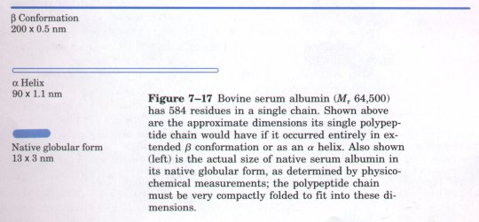
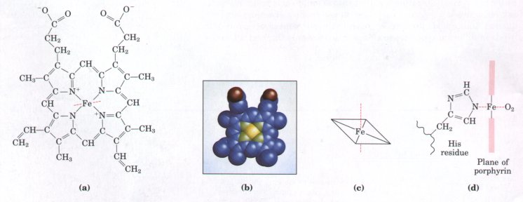
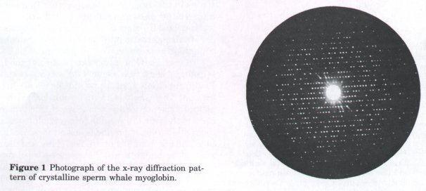
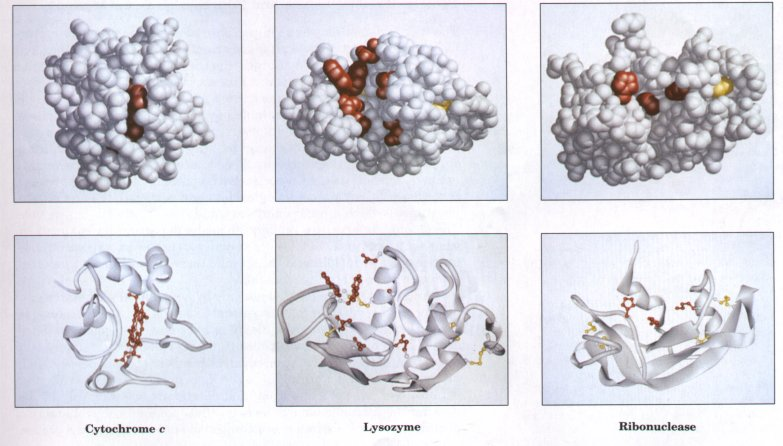
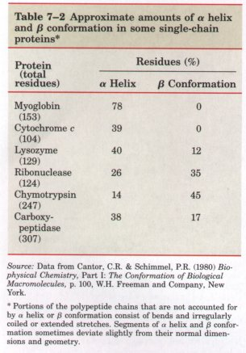
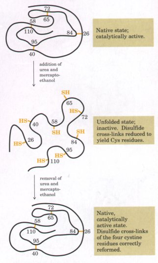
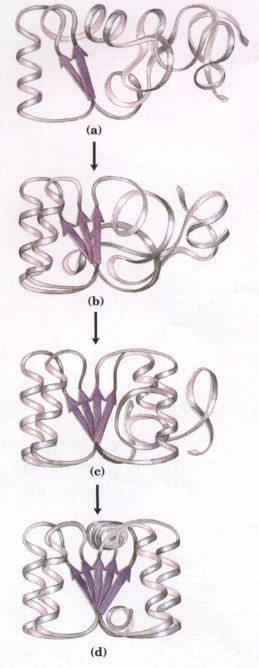
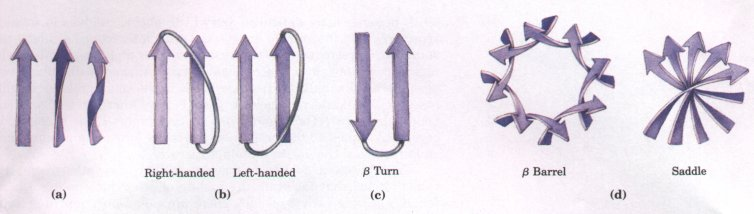
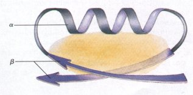

Protein Tertiary Structure
| Although fibrous proteins generally have
only one type of secondary structure, globular proteins
can incorporate several types of secondary structure in
the same molecule. Globular proteins-including enzymes,
transport proteins, some peptide hormones, and
immunoglobulins-are folded structures much more compact
than α or β conformations (as shown for serum albumin in
Figure 7-17). |
 |
The three-dimensional arrangement of all atoms in a protein is
referred to as the tertiary structure, and this now becomes our
focus. Whereas the secondary structure of polypeptide chains is
determined by the short-range structural relationship of amino
acid residues, tertiary structure is conferred by longer-range
aspects of amino acid sequence. Amino acids that are far apart in
the polypeptide sequence and reside in different types of
secondary structure may interact when the protein is folded. The
formation of bends in the polypeptide chain during folding and
the direction and angle of these bends are determined by the
number and location of specific bend-producing amino acids, such
as Pro, Thr, Ser, and Gly residues. Moreover, loops of the highly
folded polypeptide chain are held in their characteristic
tertiary positions by different kinds of weak-bonding
interactions (and sometimes by covalent bonds such as disulfide
cross-links) between R groups of adjacent loops.
We will now consider how secondary structures contribute to
the tertiary folding of a polypeptide chain in a globular
protein, and how this structure is stabilized by weak
interactions, in particular by hydrophobic interactions involving
nonpolar amino acid side chains in the tightly packed core of the
protein.
X-Ray Analysis of Myoglobin R.evealed Its Tertiary Structure
The breakthrough in understanding globular protein structure
came from x-ray diffraction studies of the protein myoglobin
carried out by John Kendrew and his colleagues in the 1950s (Box
7-3). Myoglobin is a relatively small (Mr 16,700), oxygen-binding
protein of muscle cells that functions in the storage and
transport of oxygen for mitochondrial oxidation of cell
nutrients. Myoglobin contains a single polypeptide chain of 153
amino acid residues of known sequence and a single ironporphyrin,
or heme, group (Fig. 7-18), identical to that of hemoglobin, the
oxygen-binding protein of erythrocytes. The heme group is
responsible for the deep red-brown color of both myoglobin and
hemoglobin. Myoglobin is particularly abundant in the muscles of
diving mammals such as the whale, seal, and porpoise, whose
muscles are so rich in this protein that they are brown. Storage
of oxygen by muscle myoglobin permits these animals to remain
submerged for long periods of time.

Figure 7-18 The heme group,
present in myoglobin, hemoglobin, cytochrome b, and many other
heme proteins, consists of a complex organic ring structure,
protoporphyrin, to which is bound an iron atom in its ferrous
(Fe2+ ) state. Tvvo representations are shown in (a) and (b). (c)
The iron atom has six coordination bonds, four in the plane of,
and bonded to, the flat porphyrin molecule and two perpendicular
to it. (d) In myoglobin and hemoglobin, one of the perpendicular
coordination bonds is bound to a nitrogen atom of a His residue.
The other is "open" and serves as the binding site for
an O2 molecule, as shown here in the edge view.
BOX 7-3 X-Ray DiffractionThe spacing of atoms in a
crystal lattice can be determined by measuring the angles
and the intensities at which a beam of x rays of a given
wavelength is diffracted by the electron shells around
the atoms. For example, x-ray analysis of sodium chloride
crystals shows that Na+ and Cl- ions are arranged in a
simple cubic lattice. The spacing of the different kinds
of atoms in complex organic molecules, even very large
ones such as proteins, can also be analyzed by x-ray
diffraction methods. However, this is far more difficult
than for simple salt crystals because the very large
number of atoms in a protein molecule yields thousands of
diffraction spots that must be analyzed by computer.
The process may be understood at an elementary level
by considering how images are generated in a light
microscope. Light from a point source is focused on an
object. The light waves are scattered by the object, and
these scattered waves are recombined by a series of
lenses to generate an enlarged image of the object. The
limit to the size of an object whose structure can be
determined by such a system (i.e., its resolving power)
is determined by the wavelength of the light. Objects
smaller than half the wavelength of the incident light
cannot be resolved. This is why x rays, with wavelengths
in the range of a few tenths of a nanometer (often
measured in angstroms, Ao; 1Ao =0.1 nm), must be used for
proteins. There are no lenses that can recombine x rays
to form an image; the pattern of diffracted light is
collected directly and converted into an image by
computer analysis.
Operationally, there are several steps in x-ray
structural analysis. The amount of information obtained
depends on the degree of structural order in the sample.
Some important structural parameters were obtained from
early studies of the diffraction patterns of the fibrous
proteins that occur in fairly regular arrays in hair and
wool. More detailed three-dimensional structural
information, however, requires a highly ordered crystal
of a protein. Protein crystallization is something of an
empirical science, and the structures of many important
proteins are not yet known simply because they have
proven difficult to crystallize. Once a crystal is
obtained, it is placed in an x-ray beam between the x-ray
source and a detector. A regular array of spots called
reflections (Fig. 1) is generated by precessional motion
of the crystal. The spots represent reflections of the
x-ray beam, and each atom in a molecule makes a
contribution to each spot. The overall pattern of spots
is related to the structure of the protein through a
mathematical device called a Fourier transform. The
intensity of each spot is measured from the positions and
intensities of the spots in several of these diffraction
patterns, and the precise three-dimensional structure of
the protein is calculated.
John Kendrew found that the x-ray diffraction pattern
of crystalline myoglobin from muscles of the sperm whale
is very complex, with nearly 25,000 reflections. Computer
analysis of these reflections took place in stages. The
resolution improved at each stage, until in 1959 the
positions of virtually all the atoms in the protein could
be determined. The amino acid sequence deduced from the
structure agreed with that obtained by chemical analysis.
The structures of hundreds of proteins have since been
determined to a similar level of resolution, many of them
much more complex than myoglobin.

|
Figure 7-19 shows several structural representations of
myoglobin, illustrating how the polypeptide chain is folded in
three dimensions----its tertiary structure. The backbone of the
myoglobin molecule is made up of eight relatively straight
segments of a helix interrupted by bends. The lon est a helix has
23 amino acid residues and the shortest only seven; all are
right-handed. More than 70% of the amino acids in the myoglobin
molecule are in these a-helical regions. X-ray analysis also
revealed the precise position of each of the R groups, which
occupy nearly all the open space between the folded loops.

Figure 7-19 Tertiary structure of sperm whale myoglobin. The
orientation of the protein is the same in all panels; the
heme group is shown in red. (a) The polypeptide backbone,
shown in a ribbon representation of a type introduced by
Jane Richardson; this highlights regions of secondary
structure. The a-helical regions in myoglobin are
evident. Amino acid side chains are not shown. (b) A
space-filling model, showing that the heme group is
largely buried. All amino acid side chains are included.
(c) A ribbon representation, including side
chains(purple)for the hydrophobic residues Leu, Ile, Val,
and Phe. (d) A space-filling model with all amino acid
side chains. The hydrophobic residues are again shown in
purple; most are not visible because they are buried in
the interior of the protein.
Other important conclusions were drawn from the
structure of myoglobin. The positioning of amino acid
side chains reflects a structure that derives much of its
stability from hydrophobic interactions. Most of the
hydrophobic R groups are in the interior of the myoglobin
molecule, hidden from exposure to water. All but two of
the polar R groups are located on the outer surface of
the molecule, and all of them are hydrated. The myoglobin
molecule is so compact that in its interior there is room
for only four molecules of water. This dense hydrophobic
core is typical of globular proteins. The fraction of
space occupied by atoms in an organic liquid is 0.25 to
0.35; in a typical solid the fraction is 0.75. In a
protein the fraction is 0.72 to 0.76, very comparable to
that in a solid. In this closely packed environment weak
interactions strengthen and reinforce each other. For
example, the nonpolar side chains in the core are so
close together that short-range van der Waals
interactions make a significant contribution to
stabilizing hydrophobic interactions. By contrast, in an
oil droplet suspended in water, the van der Waals
interactions are minimal and the cohesiveness of the
droplet is based almost exclusively on entropy.
|
 |
The structure of myoglobin both confirmed some expectations
and introduced some new elements of secondary structure. As
predicted by Pauling and Corey, all the peptide bonds are in the
planar trans configuration. The α helices in myoglobin provided
the first direct experimental evidence for the existence of this
type of secondary structure. Each of the four Pro residues of
myoglobin occurs at a bend (recall that the rigid R group of
proline is largely incompatible with α-helical structure). Other
bends contain Ser, Thr, and Asn residues, which are among the
amino acids that tend to be incompatible with α-helical structure
if they are in close proximity (p. 168).
The flat heme group rests in a crevice, or pocket, in the
myoglobin molecule. The iron atom in the center of the heme group
has two bonding (coordination) positions perpendicular to the
plane of the heme.One of these is bound to the R group of the His
residue at position 93; the other is the site to which an O2
molecule is bound. Within this pocket, the accessibility of the
heme group to solvent is highly restricted. This is important for
function because free heme groups in an oxygenated solution are
rapidly oxidized from the ferrous (Fe2+) form, which is active in
the reversible binding of O2, to the ferric (Fe3+) form, which
does not bind O2.
Proteins Differ in Tertiary Structure
With the elucidation of the tertiary structures of hundreds of
other globular proteins by x-ray analysis, it is clear that
myoglobin represents only one of many ways in which a polypeptide
chain can be folded. In Figure 7-20 the structures of cytochrome
c, lysozyme, and ribonuclease are compared. All have different
amino acid sequences and different tertiary structures,
reflecting differences in function. Like myoglobin, cytochrome c
is a small heme protein (Mr 12,400) containing a single
polypeptide chain of about 100 residues and a single heme group,
which in this case is covalently attached to the polypeptide. It
functions as a component of the respiratory chain of mitochondria
(Chapter 18). X-ray analysis of cytochrome c (Fig. 7-20) shows
that only about 40% of the polypeptide is in a-helical segments,
compared with almost 80??of the myoglobin chain. The rest of the
cytochrome c chain contains bends, turns, and irregularly coiled
and extended segments. Thus, cytochrome c and myoglobin differ
markedly in structure, even though both are small heme proteins.

Figure 7-20 The
three-dimensional structures of three small proteins: cytochrome
c, lysozyme, and ribonuclease. For lysozyme and ribonuclease the
active site of the enzyme faces the viewer. Key functional groups
(the heme in cytochrome c, and amino acid side chains in the
active site of lysozyme and ribonuclease) are shown in red;
disulfide bonds are shown in yellow. 'Iwo representations of each
protein are shown: a space-filling model and a ribbon
representation. In the ribbon depictions, the β structures are
represented by flat arrows and the α helices by spiral ribbons;
the orientation in each case is the same as that of the
space-filling model, to facilitate comparison.
| Lysozyme (Mr 14,600) is an enzyme in egg
white and human tear; that catalyzes the hydrolytic
cleavage of polysaccharides in the protective cell
walls of some families of bacteria. Lysozyme is so named
because it can lyse, or degrade, bacterial cell walls
and thus serve as a bactericidal agent. Like cytochrome
c, about 40% of its 129 amino acie residues are in
α-helical segments, but the arrangement is differenl and
some (3 structure is also present. Four disulfide bonds
contribute stability to this structure. The a helices
line a long crevice in the side oi the molecule (Fig.
7-20), called the active site, which is the site o1
substrate binding and action. The bacterial
polysaccharide that is the substrate for lysozyme fits
into this crevice. Ribonuclease, another small globular
protein (Mr 13,700), is ar enzyme secreted by the
pancreas into the small intestine, where i1 catalyzes the
hydrolysis of certain bonds in the ribonucleic acids
present in ingested food. Its tertiary structure,
determined by x-ray analysis, shows that little of its
124 amino acid polypeptide chain is in α-helical
conformation, but it contains many segments in the β
conformation. Like lysozyme, ribonuclease has four
disulfide bonds between loops of the polypeptide chain
(Fig. 7-20).
|
 |
Table 7-2 shows the relative percentages of α helix and β
conformation among several small, single-chain, globular
proteins. Each of these proteins has a distinct structure,
adapted for its particular biological function. These proteins do
share several important properties, however. Each is folded
compactly, and in each case the hydrophobic amino acid side
chains are oriented toward the interior (away from water) and the
hydrophilic side chains are on the surface. These specific
structures are also stabilized by a multitude of hydrogen bonds
and some ionic interactions.
Proteins Lose Structure and Function on Denaturation
The way to demonstrate the importance of a specific protein
structure for biological function is to alter the structure and
determine the effect on function. One extreme alteration is the
total loss or randomization of three-dimensional structure, a
process called denaturation. This is the familiar process that
occurs when an egg is cooked. The white of the egg, which
contains the soluble protein egg albumin, coagulates to a white
solid on heating. It will not redissolve on cooling to yield a
clear solution of protein as in the original unheated egg white.
Heating of egg albumin has therefore changed it, seemingly in an
irreversible manner. This effect of heat occurs with virtually
all globular proteins, regardless of their size or biological
function, although the precise temperature at which it occurs may
vary and it is not always irreversible. The change in structure
brought about by denaturation is almost invariably associated
with loss of function. This is an expected consequence of the
principle that the specific three-dimensional structure of a
protein is critical to its function.
Proteins can be denatured not only by heat, but also by
extremes of pH, by certain miscible organic solvents such as
alcohol or acetone, by certain solutes such as urea, or by
exposure of the protein to detergents. Each of these denaturing
agents represents a relatively mild treatment in the sense that
no covalent bonds in the polypeptide chain are broken. Boiling a
protein solution disrupts a variety of weak interactions. Organic
solvents, urea, and detergents act primarily by disrupting the
hydrophobic interactions that make up the stable core of globular
proteins; extremes of pH alter the net charge on the protein,
causing electrostatic repulsion and disruption of some hydrogen
bonding. Remember that the native structure of most proteins is
only marginally stable. It is not necessary to disrupt all of the
stabilizing weak interactions to reduce the thermodynamic
stability to a level that is insufficient to keep the protein
conformation intact.
Amino Acid Sequence Determines Tertiary Structure
The most important proof that the tertiary structure of a
globular protein is determined by its amino acid sequence came
from experiments showing that denaturation of some proteins is
reversible. Some globular proteins denatured by heat, extremes of
pH, or denaturing reagents will regain their native structure and
their biological activity, a process called renaturation, if they
are returned to conditions in which the native conformation is
stable.
A classic example is the denaturation and renaturation of
ribonuclease. Purified ribonuclease can be completely denatured
by exposure to a concentrated urea solution in the presence of a
reducing agent. The reducing agent cleaves the four disulfide
bonds to yield eight Cys residues, and the urea disrupts the
stabilizing hydrophobic interactions, thus freeing the entire
polypeptide from its folded conformation. Under these conditions
the enzyme loses its catalytic activity and undergoes complete
unfolding to a randomly coiled form (Fig. 7-21). When the urea
and the reducing agent are removed, the randomly coiled,
denatured ribonuclease spontaneously refolds into its correct
tertiary structure, with full restoration of its catalytic
activity (Fig. 7-21). The refolding of ribonuclease is so
accurate that the four intrachain disulfide bonds are reformed in
the same positions in the renatured molecule as in the native
ribonuclease. In theory, the eight Cys residues could have
recombined at random to form up to four disulfide bonds in 105
different ways. This classic experiment, carried out by Christian
Animsen in the 1950s, proves that the amino acid sequence of the
polypeptide chain of proteins contains all the information
required to fold the chain into its native, three-dimensional
structure.
| The study of homologous proteins has
strengthened this conclusion. We have seen that in a
series of homologous proteins, such as cytochrome c, from
different species, the amino acid residues at certain
positions in the sequence are invariant, whereas at other
positions the amino acids may vary (see Fig. 6-15). This
is also true for myoglobins isolated from different
species of whales, from the seal, and from some
terrestrial vertebrates. The similarity of the tertiary
structures and amino acid sequences of myoglobins from
different sources led to the conclusion that the amino
acid sequence of myoglobin somehow must determine its
three-dimensional folding pattern, an idea substantiated
by the similar structures fcund by x-ray analysis of
myoglobins from different species. Other sets of
homologous proteins also show this relationship; in each
case there are sequence homologies as well as similar
tertiary structures. Many of the invariant amino acid
residues of homologous proteins appear to occur at
critical points along the polypeptide chain. Some are
found at or near bends in the chain, others at
cross-linking points between loops in the tertiary
structure, such as Cys residues involved in disulfide
bonds. Still others occur at the catalytic sites of
enzymes or at the binding sites for prosthetic groups,
such as the heme group of cytochrome c.
|
 Figure
7-21 Renaturation of unfolded,
denatured ribonuclease, with reestablishment of correct
disulfide cross-links. Urea is added to denature
ribonuclease, and mercaptoethanol (HOCH2CH2SH) to reduce
and thus cleave the disulfide bonds of the four cystine
residues to yield eight cysteine residues.
|
Looking at naturally occurring amino
acid substitutions has an important limitation. Any
change that abolishes the function of an essential
protein (e.g., a change in an invariant residue) usually
results in death of the organism very early in
development. This severe form of natural selection
eliminates many potentially informative changes from
study. Fortunately, biochemists have devised methods to
specifically alter amino acid sequences in the laboratory
and examine the effects of these changes on protein
structure and function. These methods are derived from
recombinant DNA technology (Chapter 28) and rely on
altering the genetic material encoding the protein. By
this process, called site-directed mutagenesis, specific
amino acid sequences can be changed by deleting, adding,
rearranging, or substituting amino acid residues. The
catalytic roles of certain amino acids lining the active
sites of enzymes such as triose phosphate isomerase and
chymotrypsin have been elucidated by substituting
different amino acids in their place. The importance of
certain amino acids in protein folding and structure is
being addressed in the same way.Tertiary Structures
Are Not Rigid
Although the native tertiary conformation of a
globular protein is the thermodynamically most stable
form its polypeptide chain can assume, this conformation
must not be regarded as absolutely rigid. Globular
proteins have a certain amount of flexibility in their
backbones and undergo short-range internal fluctuations.
Many globular proteins also undergo small conformational
changes in the course of their biological function. In
many instances, these changes are associated with the
binding of a ligand. The term ligand in this context
refers to a specific molecule that is bound by a protein
(from Latin, ligare, "to tie" or
"bind"). For example, the hemoglobin molecule,
which we shall examine later in this chapter, has one
conformation when oxygen is bound, and another when the
oxygen is released. Many enzyme molecules also undergo a
conformational change on binding their substrates, a
process that is part of their catalytic action (Chapter
8).
|
 Figure
7-22 A possible protein-folding
pathway. (a) Protein folding often begins with
spontaneous formation of a structural nucleus consisting
of a few particularly stable regions of secondary
structure. (b) As other regions adopt secondary
structure, they are stabilized by long-range interactions
with the structural nucleus. (c) The folding process
continues until most of the polypeptide has assumed
regular secondary structure. (d) The final structure
generally represents the most thermodynamically stable
conformation.
|
Polypeptides Fold Rapidly by a Stepwise Process
In living cells, proteins are made from amino acids at a very
high rate. For example, Escherichia coli cells can make a
complete, biologically active protein molecule containing 100
amino acid residues in about 5 s at 37°C. Yet calculations show
that at least 1050yr would be required for a polypeptide chain of
100 amino acid residues to fold itself spontaneously by a random
process in which it tries out all possible conformations around
every single bond in its backbone until it finds its native,
biologically active form. Thus protein folding cannot be a
completely random, trial-and-error process. There simply must be
shortcuts.
The folding pathway of a large polypeptide chain is
unquestionably complicated, and the principles that guide this
process have not yet been worked out in detail. For several
proteins, however, there is evidence that folding proceeds
through several discrete intermediates, and that some of the
earliest steps involve local folding of regions of secondary
structure. In one model (Fig. 7-22), the process is envisioned as
hierarchical, following the levels of structure outlined at the
beginning of this chapter. Local secondary structures would form
first, followed by longer-range interactions between, say, two α
helices with compatible amino acid side chains, a process
continuing until folding was complete. In an alternative model,
folding is initiated by a spontaneous collapse of the polypeptide
into a compact state mediated by hydrophobic interactions among
nonpolar residues. The state resulting from this
"hydrophobic collapse" may have a high content of
secondary structure, but many amino acid side chains are not
entirely fixed. Either or both models (and perhaps others) may
apply to a given protein.

Figure 7-23 Extended
β chains of amino acids tend to twist in a right-handed sense
because the slightly twisted conformation is more stable than the
linear conformation (a). This influences the conformation of the
polypeptide segments that connect two β strands, and also the
stable conformations assumed by several adjacent β strands.(b)
Connections between parallel β chains are right-handed. (c) The
β turn is a common connector between antiparallel β chains. (d)
The tendency for right-handed twisting is seen in two
particularly stable arrangements of adjacent β chains: the ß
barrel and the saddle; these structures form the stable core of
many proteins.
A number of structural constraints help to guide the
interaction of regions of secondary structure. The most common
patterns are sometimes referred to as supersecondary structures.
A prominent one is a tendency for extended β conformations to
twist in a right-handed sense (Fig. 7-23a). This influences both
the arrangement of β sheets relative to one another and the path
of the polypeptide segment connecting two β strands. Two
parallel β strands, for example, must be connected by a
crossover strand (Fig. 7-23b). In principle, this crossover could
have a right- or left-handed conformation, but only the
right-handed form is found in proteins. The twisting of β sheets
also leads to a characteristic twisting of the structure formed
when many sheets are put together. Two examples of resulting
structures are the β barrel and saddle shapes (Fig. 7-23d),
which form the core of many larger structures.
| Weak-bonding interactions represent the
ultimate thermodynamic constraint on the interaction of
different regions of secondary structure. The R groups of
amino acids project outward from α-helical and a
structures, and thus the need to bury hydrophobic
residues means that water-soluble proteins must have more
than one layer of secondary structure. One simple
structural method for burying hydrophobic residues is a
supersecondary structural unit called α- β-α loop (Fig.
7-24), a structure often repeated multiple times in
larger proteins. More elaborate structures are domains
made up of facing (3 sheets (with hydrophobic residues
sandwiched between), and β sheets covered on one side
with several a helices, as described later. |
 Figure
7-24 The β-α loop. The shaded
region denotes the area where stabilizing hydrophobic
interactions occur.
|
It becomes more difficult to bury hydrophobic residues in
smaller structures, and the number of potential weak interactions
available for stabilization decreases. For this reason, smaller
proteins are often held together with a number of covalent bonds,
principally disulfide linkages. Recall the multiple disulfide
bonds in the small proteins insulin (see Fig. 6-10) and
ribonuclease (Fig. 7-21). Other types of covalent bonds also
occur. The heme group in cytochrome c, for example, is covalently
linked to the protein on two sides, providing a significant
stabilization of the entire protein structure.
Not all proteins fold spontaneously as they are synthesized in
the cell. Proteins that facilitate the folding of other proteins
have been found in a wide variety of cells. These are called
polypeptide chain binding proteins or molecular chaperones.
Several of these proteins can bind to polypeptide chains,
preventing nonspecific aggregation of weak-bonding side chains.
They guide the folding of some polypeptides, as well as the
assembly of multiple polypeptides into larger structures.
Dissociation of polypeptide chain binding proteins from
polypeptides is often coupled to ATP hydrolysis. One family of
such proteins has structures that are highly conserved in
organisms ranging from bacteria to mammals. These proteins (Mr
70,000), as well as several other families of polypeptide chain
binding proteins, were originally identied as "heat
shock" proteins because they are induced in many cells when
heat stress is applied, and apparently help stabilize other
proteins.
Some proteins have also been found that promote polypeptide
folding by catalyzing processes that otherwise would limit the
rate of folding, such as the reversible formation of disulfide
bonds or proline isomerization (the interconversion of the cis
and trans isomers of peptide bonds involving the imino nitrogen
of proline; see Fig. 7-10).
There Are a Few Common Tertiary Structural Patterns


Figure 7-25 Examples of some
common structural motifs in proteins. (a) The
α/β barrel, found in pyruvate kinase and triose phosphate
isomerase, enzymes of the glycolytic pathway. This structure also
occurs in the larger domain of ribulose-1,5-bisphosphate
carboxylase/oxygenase (known also as rubisco), an enzyme
essential to the fixation of CO2 by plants; in glycolate oxidase,
an enzyme in photorespiration; and in a number of other unrelated
proteins. (b) The four-helix bundle, shown here
in cytochrome b562 and myohemerythrin. A dinuclear iron center
and coordinating amino acids in myohemerythrin are shown in
orange. Myohemerythrin is a nonheme oxygen-transporting protein
found in certain worms and mollusks. The four-helix bundle is
also found in apoferritin and the tobacco mosaic virus
coat-protein. Apoferritin is a widespread protein involved in
iron transport and storage. (c) α-β with saddle
at core, in carboxypeptidase, a protein-hydrolyzing (proteolytic)
enzyme, and lactate dehydrogenase, a glycolytic enzyme.(d)
β-β Sandwich. In the protein insecticyanin of moths, the
hydrophobic pocket binds biliverdin, a colored substance that
plays a role in camouflage. αl-Antitrypsin is a naturally
occurring inhibitor of the proteolytic enzyme trypsin.
Following the folding patterns outlined above and others yet
to be discovered, a newly synthesized polypeptide chain quickly
assumes its most stable tertiary structure. Although each protein
has a unique structure, several patterns of tertiary structure
seem to occur repeatedly in proteins that differ greatly in
biological function and amino acid sequence (Fig. 7-25). This may
reflect an unusual degree of stability and/or functional
flexibility conferred by these particular tertiary structures. It
also demonstrates that biological function is determined not only
by the overall three-dimensional shape of the protein, but also
by the arrangement of amino acids within that shape.
One structural motif is made up of eight β strands arranged
in a circle with each β strand connected to its neighbor by an α
helix. The (3 regions are arranged in the barrel structure
described in Figure 7-23, and they influence the overall tertiary
structure, giving rise to the name α/β barrel (Fig. 7-25a). This
structure is found in many enzymes; a binding site for a cofactor
or substrate is often found in a pocket formed near an end of the
barrel.
Another structural motif is the four-helix bundle (Fig.
7-25b), in which four α helices are connected by three peptide
loops. The helices are slightly tilted to form a pocket in the
middle, which often contains a binding site for a metal or other
cofactors essential for biological function. A somewhat similar
structure in which seven helices are arranged in a barrel-like
motif is found in some membrane proteins (see Fig. 10-10). The
seven helices often surround a channel that spans the membrane.
A third motif has a β sheet in the "saddle"
conformation forming a stable core, often surrounded by a number
of α-helical regions (Fig. 7-25c). Structures of this kind are
found in many enzymes. The location of the substrate binding site
varies, determined by the placement of the a helices and other
variable structural elements.
One final motif makes use of a sandwich of β sheets, layered
so that the strands of the sheets form a quiltlike cross-hatching
when viewed from above (Fig. 7-25d). This creates a hydrophobic
pocket between the β sheets that is often a binding site for a
planar hydrophobic molecule.